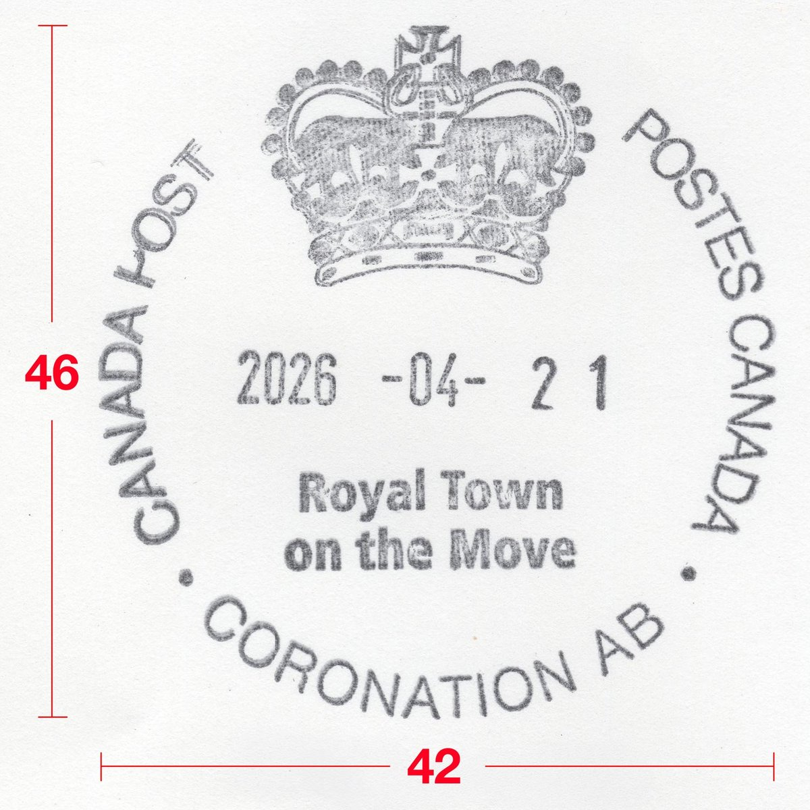

Coronation PO pictorial cancel
Royal Town on the Move · 2nd version
- Status
- Active
- Run dates
- 2018-01-01 to 2029-12-31
- Design
- "Royal Town on the Move"; crown
- Ink colour
- Black
- Designer
- Unknown
- Post office
- Coronation PO
4922 Windsor Ave
Coronation, AB
T0C 1C0 - Subjects
- royal, crown
Collect it by mail. Send your stamped covers, with a stamped return envelope, to the post office address above. How to collect pictorial cancels by mail · en français
 Castor POThe Key to Success / La clé du succès
Castor POThe Key to Success / La clé du succès Hanna PO1st version
Hanna PO1st version Hanna PO2nd version
Hanna PO2nd version Drumheller PO2nd version
Drumheller PO2nd version